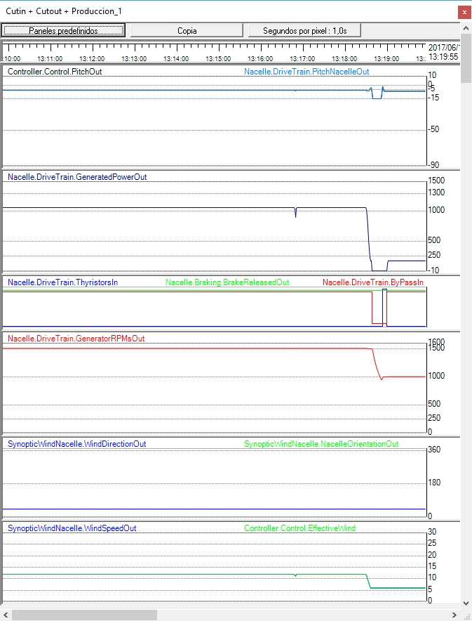

Obiettivo:Per capire la transizione inversa e perché il sistema torna a 1000.
Cosa osservare:Stato di ritorno, stabilità, stati e potenza/velocità evoluzione.
Cosa notare:Soglia di ritorno e tempo a stato costante.
💡 Controllare se il ritorno è per la sicurezza, l'efficienza o il controllo della velocità.
Questa classe pratica esegue un'operazione simile a quella descritta inDurante la produzione, modificare il vento per cambiare la connessione da Small a Large Generator, ma con un'evoluzione della velocità del vento da più alto a basso.
Utilizzare il tasto "Page forward" per ridurre la velocità del vento inferiore a 6,2 m/s, che corrisponde al valore "Min for large generator" (vedereValori del vento funzionali). Ad esempio, lascialo a 6 m/s.
Su un registratore con il pannello "Cutin + Cutout + Production", vedrete la seguente evoluzione dei segnali.

Si può vedere come la griglia viene prima scollegata (taglio), preceduta da una variazione del valore del passo che riduce la potenza ottenuta dal vento. Una volta disattivati i contatti Thyristor Bypass, il tipo di connessione del generatore cambia da 4 poli (grande generatore) a 6 poli (piccolo generatore). Il valore del passo provoca il rallentamento del treno di potenza, che continua fino a quando la velocità dell'albero del generatore "fallisce" sotto la velocità sincrona (ora 1.000 giri/min). Da quel momento in poi, il controller segue un normale processo di connessione alla griglia (cutin).